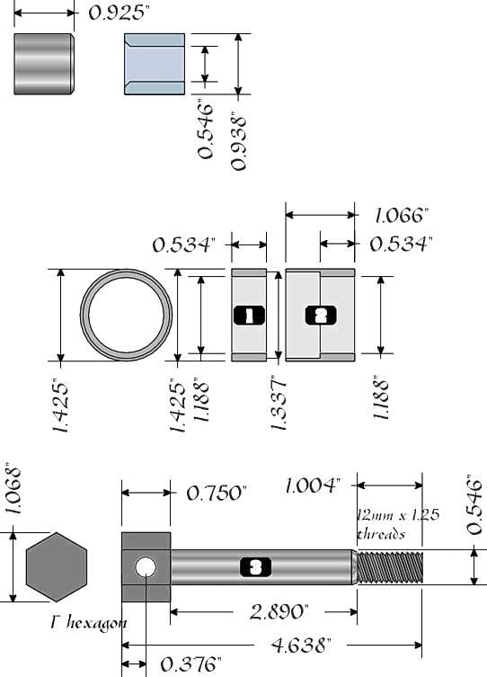
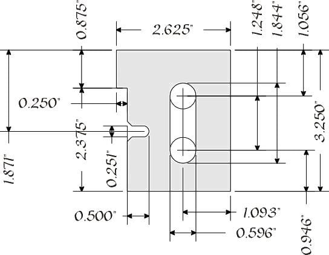

-
Basically like a subframe riser? But you're only changing the arms pivot point?
"Let's play Battleship! There's enough Z's for that.."
My thread thingy: http://z31performance.com/showthread…ep-Zed-84Zed31 -
Basically if from Subframe "riser" i am following you correctly. If you moved the subframe up (without the limitation of the car's floor) in relation to the "drop" of the new springs, then, it would move the suspension back to it's neutral state, as designed from the factory, and put the suspension back into a location in its travel where it was designed to operate.
Following that theory, moving the front mounting points of the control arm UP from their factory location, with the same relation to the "drop" of new springs, it should then move the suspension back into a more natural, and neutral location. Moving one mount DOWN and keeping the inner mount in its factory location does cure camber, but also adds bind to the equation.
Looking how our suspension moves in two directions during its operation (increasing negative camber as it travels upwards), moving only one mounting point will, at least theoretically, change the way the rear suspension reacts-be it to a bump in the road, or to hard cornering- it will no longer move in the arc that it was designed to move in from Nissan.Originally posted by bronzemfp -
I swear there was a thread on what you just said. But even if you change the relationship of the subframe mount to the body, you still have to address the relationship of the actual spring mounts as well to dont you?Smn2k7 wrote: Basically if from Subframe "riser" i am following you correctly. If you moved the subframe up (without the limitation of the car's floor) in relation to the "drop" of the new springs, then, it would move the suspension back to it's neutral state, as designed from the factory, and put the suspension back into a location in its travel where it was designed to operate.
Following that theory, moving the front mounting points of the control arm UP from their factory location, with the same relation to the "drop" of new springs, it should then move the suspension back into a more natural, and neutral location. Moving one mount DOWN and keeping the inner mount in its factory location does cure camber, but also adds bind to the equation.
Looking how our suspension moves in two directions during its operation (increasing negative camber as it travels upwards), moving only one mounting point will, at least theoretically, change the way the rear suspension reacts-be it to a bump in the road, or to hard cornering- it will no longer move in the arc that it was designed to move in from Nissan.My Build Thread -
Measuring it out, I don't believe so, like I said, if I had suspension under the car, or the ability to stick one side in, I'd hack one of my spare subframes and start moving it around.
I'm working off a theory that a fabricator friend of mine and I came up with while sitting around his shop. It makes sense to me, but I don't know if someone has tried moving both mounts up before.
If you move them both up, inner and outer, the same amount, technically, nothing should change in the location of the spring and spring seats, just the relationship of the angle of thelower control armtrailing arm to the body, and it's location in it's "sweep"
I bring up this point, because I've heard complaints of people not being able to go as low as they want and have the handling and grip they want, because of the way the arm moves when the car is lowered. if you lower the car an inch, the arm is one inch "higher" in its range of motion (whether camber has been corrected or not) and will operate much differently than if the car was lowered an inch, then the pivot points brought "up" an inch. That should, again, -technically- bring the suspension back to a point of neutrality in it's operating range, no? being back at this neutral location, camber should be manageable again, and the suspension should operate predictably as designed. All in all, it's just a theory, but it seems logical, and even feasible based on what I can look at and see, as well as other people's concerns/complaints/input.
I'll take some measurements and try to get some better images drawn up of what we came up with in the next week or so.
I appreciate your input!
-Sean N.Originally posted by bronzemfp -
But its not the height or position of the rear crossmember that causes these issues, its the height and position of the spring in relation to the rear trailing arms. So if you modify the crossmember main mounts( lets say 3 inches lower than it should be), then even when the suspension is on the ground the camber will still be the same because it wasnt modified. The problem IMO lies within the trailing arm position.
If it was that easy, datsun, bmw, 240sx, and all other cars with this design would of done that already because in theroy it is easier.
Best fix, get tokico springs LOL.
But im not arguing, and im not an expert. Just my opinion ( I swear there was a thread on this decades ago).
Ok are you takling about moving the crossmember up, or the trailing arms up? Cause now im completly confusedMy Build Thread -
I think he means the trailing arms.
"Let's play Battleship! There's enough Z's for that.."
My thread thingy: http://z31performance.com/showthread…ep-Zed-84Zed31 -
I'll try and dig out my car's suspension and get it on stands in the garage and get some pictures to show my point, obviously words aren't conveying the thoughts effectively.
I am NOT- Proposing moving the subframe itself
Move the mounting points of the trailing arms UP in relation to the horizontal axis of the car (as in the picture below.
If you look at our rear suspension and lay it on a floor, then move the arms through their range of motion, you can see the camber change. Now, i realize, and have attempted to point out, that the changes that are negative happen when the distance between the lower control arm spring seat and the spring seat in the frame of the car has been DECREASED (I.E. shorter springs) which, will change the relation of the arm's REAR (spring seat side) versus the arm's front mounts (the toe adjustment bolt and the outer stationary bolt. This change is what causes the increase in negative camber.
Bringing the FRONT pivot points of the trailing arm (on the crossmember) UP in relation to the decrease in distance at the rear of the arm, should help to negate the effects of lowering springs on camber, because of the design of the rear suspension as a whole.
Thanks again for your thoughts,
Sean N.Originally posted by bronzemfp -
You're talking about sweep angle. Check out my thread here: viewtopic.php?f=2&t=30861Smn2k7 wrote: I'll try and dig out my car's suspension and get it on stands in the garage and get some pictures to show my point, obviously words aren't conveying the thoughts effectively.
I am NOT- Proposing moving the subframe itself
Move the mounting points of the trailing arms UP in relation to the horizontal axis of the car (as in the picture below.
If you look at our rear suspension and lay it on a floor, then move the arms through their range of motion, you can see the camber change. Now, i realize, and have attempted to point out, that the changes that are negative happen when the distance between the lower control arm spring seat and the spring seat in the frame of the car has been DECREASED (I.E. shorter springs) which, will change the relation of the arm's REAR (spring seat side) versus the arm's front mounts (the toe adjustment bolt and the outer stationary bolt. This change is what causes the increase in negative camber.
Bringing the FRONT pivot points of the trailing arm (on the crossmember) UP in relation to the decrease in distance at the rear of the arm, should help to negate the effects of lowering springs on camber, because of the design of the rear suspension as a whole.
Thanks again for your thoughts,
Sean N.86na - BlueZ
Shiro #366 - Kouki Monster
85t - Mr Tickles -
This is a great diagram, the only part I don't understand is the piece in the top left corner on the second image. It's labeled 0.925," what is this exactly?1artworkz wrote: OK. So here it is. The PDF below tells how I did it and the picture in this post
give an overview of the results and parts required. I had a local (CA) machine
shop make the parts for me. The cost was a little under $500.00.
I don't offer these for sale. This was a 'one-off' project.
If you choose to do this and want the "Self Lubricating Soft Bearing Poly Seals,"
I will sell the set for $30.00.
http://www.garymolitor.com/300zx/camber … mounts.pdf



-
[quote]rangerkid wrote:Originally posted by 1artworkzIt is the metal sleeve left when you burn off the rubber bushing. (check the I.D. and compare it to the bolt) they are the blue shaded parts in the top drawing. They have to be cut to length to work.Originally posted by 1artworkz…and how much HP do you have at 0 boost -
Could be confused with the outer metal casing/sleeve that houses the OEM rubber bushings, so I made a small amendment.Russ84na wrote: It is the inner metal sleeve left when you burn off the rubber bushing. The one where the bolts pass through. -
[quote]Careless wrote:Originally posted by Russ84naThis is all starting to make sence now, I'll have to see if my friends who work in a machine shop will cut me a deal on these parts.Originally posted by Russ84na -
Quick question. If I do this camber mod. Will the toe angle essentially improve a bit?
Fix: Drill out the toe adjustment.
Thanks. -
move the toe towards the front of the car 1/4 inch. Ream it out afterwards, and you will be able to achieve correct toe. I had neutral toe and still had some adjustment left.My Build Thread -
Depends on final ride height. 1/4" would only get me half way back to spec.862sik wrote: move the toe towards the front of the car 1/4 inch. Ream it out afterwards, and you will be able to achieve correct toe. I had neutral toe and still had some adjustment left.86na - BlueZ
Shiro #366 - Kouki Monster
85t - Mr Tickles

Copyright © 2006–. All rights reserved. Privacy Policy